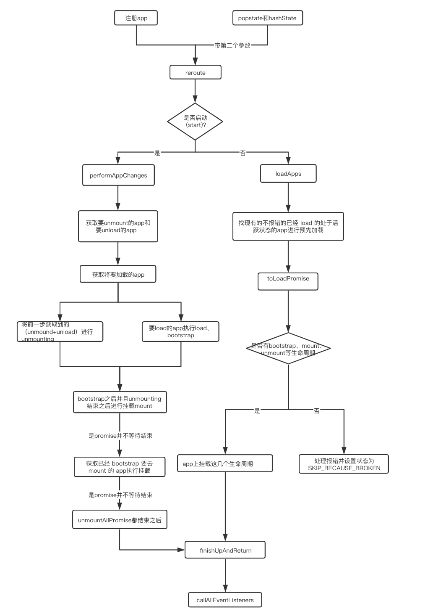
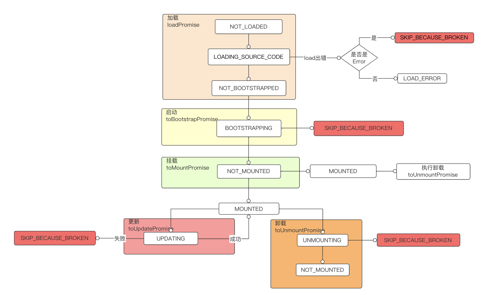

在了解single-spa基本功能后，可以将其简单概括为：single-spa 的核心就是动态将子应用的资源文件插入到主应用中。那内部是如何管理子应用、如何做到子应用之间的动态切换。带着这些疑问探究 single-spa 源码。
源码主要分为三部分：app 应用、Navigation 路由、生命周期。
application
应用状态
为了更好的管理 app，每个app在运行期间都有自己的状态
每个应用在整个运行期间都有自己的状态，根据不同状态做对应的处理。
- null ： app 不存在
- NOT_LOADED：已经注册还没加载
- LOADING_SOURCE_CODE：正在加载 app 代码（registerApplication 的第二个参数）
- NOT_BOOTSTRAPPED：已经加载还没启动，即未执行 app 的 bootstrap 生命周期函数
- BOOTSTRAPPING：正在启动，执行 app 的 bootstrap 生命周期函数，只执行一次
- NOT_MOUNTED：已经启动还没挂载
- MOUNTING： 正在挂载，执行 app 的 mount 函数
- MOUNTED：已经挂载
- UNMOUNTING：正在移除挂载，执行 app 的 unmount 函数
- UNLOADING： 正在卸载，还没完成
- SKIP_BECAUSE_BROKEN：执行期间出错
注册应用
框架内部统一管理所有应用来进行应用之间的调度（应用的挂载卸载错误等处理），应用注册成功后，会放到内部统一管理应用的的数组 apps 里。registerApplication：（appName，applicationOrLoadingFn，activeFn， customProps）
- appName： 应用唯一标识。
- applicationOrLoadingFn： 入口 js 文件，这就需要子应用做一些处理，需要打包成特殊的文件格式进行加载
- activeFn：什么时候激活应用，根据 url 进行匹配。
- customProps：给子应用传递的参数，例如登录信息权限控制等。
注册成功之后的单个 app 信息如下：
1 | apps.push({ |
除了注册传递的参数以外，single-spa 给每个 app 增加了状态 status。注册后的状态为 NOT_LOADED，表示已经注册但未加载。
注册成功后，会执行 reroute 方法，reroute 内部判断是否已经 start，如果未启动，则找到匹配的应用（不报错的、还未 load 的）进行预加载，为挂载做准备。如果已经启动，则取消已经挂载的，找到当前匹配的进行挂载，reroute 是整个 single-app 的核心，后面还会详细分析。
卸载应用
unregisterApplication 会去调用 unloadApplication，然后在 apps 里找到对应的 app 将其删除。
在 unloadApplication 里，会先去看当前应用是否有正在被 unload，如果存在则直接返回。否则需要先 unmount 之后再去 unload。
Navigation
1 | window.addEventListener('hashchange', urlReroute); |
全局监听了 hashchange 和 popstate 事件来拦截 url 的变化，在路由事件到达应用框架（Vue、React）之前做应用的挂载卸载处理，当触发这两个事件后，也会执行 reroute，同时带上事件参数传递给 reroute。下面重点分析一下 reroute。
reroute
1 | /* |
画个简易的流程图如下：

lifecycles
single-spa 的亮点除了顶层路由的设计，另一个亮点就是生命周期的设计。生命周期的设计使得主应用更好的控制子应用。整个生命周期状态变更如下:

app 出错的状态有两个：SKIP_BECAUSE_BROKEN 与 LOAD_ERROR。SKIP_BECAUSE_BROKEN 表示在状态变更时出错，阻止往下个状态变更，LOAD_ERROR 表示加载错误，此时会记录当前的时间戳，当路由再次导航到对应用时还会尝试去加载（时间间隔大于200ms）。
挂载阶段出错时，在状态变成 SKIP_BECAUSE_BROKEN 之前需要先将状态变成 mounted，因为出错后要执行 toUnmountPromise 卸载应用，而 toUnmountPromise 会判断如果状态不是 MOUNTED 时会跳过。
single-spa-react
上面提到，在加载应用资源时，会去检查 app 的三个生命周期状态，single-spa 要求接入的应用都提供这三个生命周期，所以官方官方适配出了各个框架的工具。以single-spa-react 为例，react 应用的入口文件通过 single-spa-react 封装，暴露给 single-spa 三个生命周期函数，并且都是 Promise。
1 | const defaultOpts = { |
- bootstrap: 如果是 class 或者无状态组件，则直接返回。确保传入的是 React 根组件。
- mount: 找到 single-spa 传递给应用的 DOM 节点(domElementGetter)，执行 reactDomRender 进行渲染。
- unmount: 从 DOM 中移除 React 应用。